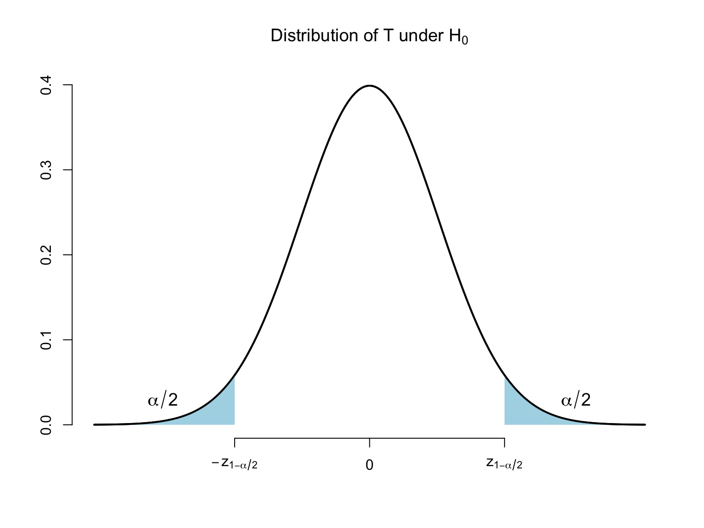
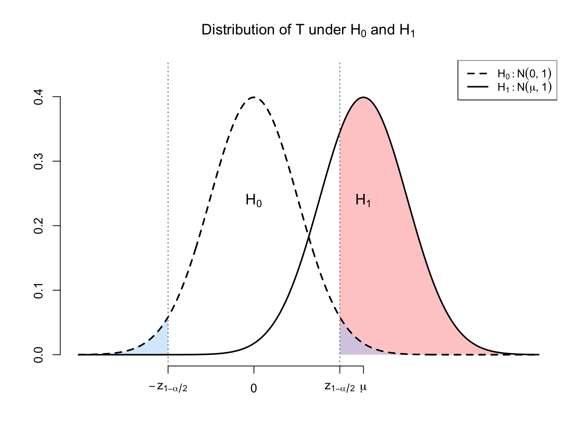

Lecture 8: Hypothesis testing (Part 1)
Economics 326 — Econometrics II
Hypothesis testing
$
$
Hypothesis testing is one of the fundamental problems in statistics.
A hypothesis is (usually) an assertion about the unknown population parameters such as \beta _{1} in Y_{i}=\beta _{0}+\beta _{1}X_{i}+U_{i}.
Using the data, the econometrician has to determine whether an assertion is true or false.
Example: Phillips curve: \text{Unemployment}_{t}=\beta _{0}+\beta _{1}\text{Inflation}_{t}+U_{t}.
In this example, we are interested in testing if \beta _{1}=0 (no Phillips curve) against \beta _{1}<0 (Phillips curve).
Null and alternative hypotheses
Usually, we have two competing hypotheses, and we want to draw a conclusion, based on the data, as to which of the hypotheses is true.
Null hypothesis, denoted as H_{0}: A hypothesis that is held to be true, unless the data provides sufficient evidence against it.
Alternative hypothesis, denoted as H_{1}: A hypothesis against which the null is tested. It is held to be true if the null is found false.
Usually, the econometrician has to carry the “burden of proof,” and the case that he is interested in is stated as H_{1}.
The econometrician has to prove that his assertion (H_{1}) is true by showing that the data rejects H_{0}.
The two hypotheses must be disjoint: it should be the case that either H_{0} is true or H_{1} but never together simultaneously.
Decision rule
The econometrician has to choose between H_{0} and H_{1}.
The decision rule that leads the econometrician to reject or not to reject H_{0} is based on a test statistic, which is a function of the data \left\{ \left( Y_{i},X_{i}\right) :i=1,\ldots n\right\} .
Usually, one rejects H_{0} if the test statistic falls into a critical region. A critical region is constructed by taking into account the probability of making a wrong decision.
Errors
There are two types of errors that the econometrician can make:
Truth: H_0 Truth: H_1 Decision: H_0 \checkmark Type II error Decision: H_1 Type I error \checkmark Type I error is the error of rejecting H_{0} when H_{0} is true.
The probability of Type I error is denoted by \alpha and called significance level or size of a test: P\left( \text{Type I error}\right) =P\left( \text{reject }H_{0}|H_{0}\text{ is true}\right) =\alpha .
Type II error is the error of not rejecting H_{0} when H_{1} is true.
Power of a test: 1-P\left( \text{Type II error}\right) =1-P\left( \text{Accept }H_{0}|H_{0}\text{ is false}\right) .
Errors
The decision rule depends on a test statistic T.
The real line is split into two regions: acceptance region and rejection region (critical region).
When T is in the acceptance region, we accept H_{0} (and risk making a Type II error).
When T is in the rejection (critical) region, we reject H_{0} (and risk making a Type I error).
Unfortunately, the probabilities of Type I and II errors are inversely related. By decreasing the probability of Type I error \alpha , one makes the critical region smaller, which increases the probability of the Type II error. Thus it is impossible to make both errors arbitrarily small.
By convention, \alpha is chosen to be a small number, for example, \alpha =0.01,0.05, or 0.10. (This is in agreement with the econometrician carrying the burden of proof).
Steps
The following are the steps of the hypothesis testing:
Specify H_{0} and H_{1}.
Choose the significance level \alpha .
Define a decision rule (critical region).
Perform the test using the data: given the data compute the test statistic and see if it falls into the critical region.
The decision depends on the significance level \alpha: larger values of \alpha correspond to bigger critical regions (probability of Type I error is larger).
It is easier to reject the null for larger values of \alpha.
p-value: Given the data, the smallest significance level at which the null can be rejected.
Assumptions
\beta _{1} is unknown, and we have to rely on its OLS estimator \hat{\beta}_{1}.
We need to know the distribution of \hat{\beta}_{1} or of its certain functions.
We will assume that the assumptions of the Normal Classical Linear Regression model are satisfied:
Y_{i}=\beta _{0}+\beta _{1}X_{i}+U_{i},\qquad i=1,\ldots ,n.
\mathrm{E}\left[U_{i}\mid X_{1},\ldots ,X_{n}\right] =0 for all i’s.
\mathrm{E}\left[U_{i}^{2}\mid X_{1},\ldots ,X_{n}\right] =\sigma ^{2} for all i’s.
\mathrm{E}\left[U_{i}U_{j}\mid X_{1},\ldots ,X_{n}\right] =0 for all i\neq j.
U’s are jointly normally distributed conditional on X’s.
To derive the distribution of \hat{\beta}_{1}, we need to understand the normal distribution.
Normal distribution
A normal rv is a continuous rv that can take on any value. The PDF of a normal rv X is f(x) = \frac{1}{\sqrt{2\pi\sigma^2}} \exp\left(-\frac{(x - \mu)^2}{2\sigma^2}\right), \text{ where} \mu = \mathrm{E}\left[X\right] \text{ and } \sigma^2 = \mathrm{Var}\left(X\right). We usually write X \sim N(\mu, \sigma^2).
If X \sim N(\mu, \sigma^2), then a + bX \sim N(a + b\mu, b^2\sigma^2).
Standard normal distribution
Standard normal rv has \mu = 0 and \sigma^2 = 1. Its PDF is \phi(z) = \frac{1}{\sqrt{2\pi}} \exp\left(-\frac{z^2}{2}\right).
Symmetric around zero (mean): if Z \sim N(0, 1), P(Z > z) = P(Z < -z).
Thin tails: P(-1.96 \leq Z \leq 1.96) = 0.95.
If X \sim N(\mu, \sigma^2), then (X - \mu)/\sigma \sim N(0, 1).
Bivariate normal distribution
X and Y have a bivariate normal distribution if their joint PDF is given by: f(x, y) = \frac{1}{2\pi\sqrt{(1-\rho^2) \sigma_X^2 \sigma_Y^2}} \exp\left[-\frac{Q}{2(1-\rho^2)}\right], where Q = \frac{(x-\mu_X)^2}{\sigma_X^2} + \frac{(y-\mu_Y)^2}{\sigma_Y^2} - 2\rho\frac{(x-\mu_X)(y-\mu_Y)}{\sigma_X\sigma_Y},
\mu_X = \mathrm{E}\left[X\right], \mu_Y = \mathrm{E}\left[Y\right], \sigma_X^2 = \mathrm{Var}\left(X\right), \sigma_Y^2 = \mathrm{Var}\left(Y\right), and \rho = \mathrm{Corr}(X, Y).
Properties of bivariate normal
If X and Y have a bivariate normal distribution:
a + bX + cY \sim N(\mu^*, (\sigma^*)^2), where \mu^* = a + b\mu_X + c\mu_Y, \quad (\sigma^*)^2 = b^2\sigma_X^2 + c^2\sigma_Y^2 + 2bc\rho\sigma_X\sigma_Y.
\mathrm{Cov}\left(X, Y\right) = 0 \Longrightarrow X and Y are independent.
Can be generalized to more than 2 variables (multivariate normal).
Normality of the OLS estimator
Assume that U_{i}’s are jointly normally distributed conditional on X’s (Assumption 5).
Then Y_{i}=\beta _{0}+\beta _{1}X_{i}+U_{i} are also jointly normally distributed conditional on X’s.
Since \hat{\beta}_{1}=\sum_{i=1}^{n}w_{i}Y_{i}, where w_{i}=\frac{X_{i}-\bar{X}}{\sum_{l=1}^{n}\left( X_{l}-\bar{X}\right) ^{2}} depend only on the X_i’s, \hat{\beta}_{1} is also normally distributed conditional on the X_i’s.
Conditionally on \mathbf{X}: \hat{\beta}_{1}\sim N\left( \beta _{1},\mathrm{Var}\left(\hat{\beta}_{1}\right) \right) \text{, where }\mathrm{Var}\left(\hat{\beta}_{1}\right) =\frac{\sigma ^{2}}{\sum_{i=1}^{n}\left( X_{i}-\bar{X}\right) ^{2}}.
Two-sided tests
For Y_{i}=\beta _{0}+\beta _{1}X_{i}+U_{i}, consider testing H_{0}:\beta _{1}=\beta _{1,0}, against H_{1}:\beta _{1}\neq \beta _{1,0}.
\beta _{1} is the true unknown value of the slope parameter.
\beta _{1,0} is a known number specified by the econometrician. (For example \beta _{1,0} is zero if you want to test \beta _{1}=0).
Such a test is called two-sided because the alternative hypothesis H_{1} does not specify in which direction \beta _{1} can deviate from the asserted value \beta _{1,0}.
Two-sided tests when \sigma^2 is known (infeasible test)
Suppose for a moment that \sigma ^{2} is known.
Consider the following test statistic: T=\frac{\hat{\beta}_{1}-\beta _{1,0}}{\sqrt{\mathrm{Var}\left(\hat{\beta}_{1}\right) }},\text{ where }\mathrm{Var}\left(\hat{\beta}_{1}\right) =\frac{\sigma ^{2}}{\sum_{i=1}^{n}\left( X_{i}-\bar{X}\right) ^{2}}.
Consider the following decision rule (test): \text{Reject }H_{0}:\beta _{1}=\beta _{1,0}\text{ when }\left\vert T\right\vert >z_{1-\alpha /2}, where z_{1-\alpha /2} is the \left( 1-\alpha /2\right) quantile of the standard normal distribution (critical value).
Test validity and power
We need to establish that:
The test is valid, where the validity of a test means that it has correct size or P\left( \text{Type I error}\right) =\alpha: P\left( \left\vert T\right\vert >z_{1-\alpha /2}|\beta _{1}=\beta _{1,0}\right) =\alpha .
The test has power: when \beta _{1}\neq \beta _{1,0} (H_{0} is false), the test rejects H_{0} with probability that exceeds \alpha: P\left( \left\vert T\right\vert >z_{1-\alpha /2}|\beta _{1}\neq \beta _{1,0}\right) >\alpha .
We want P\left( \left\vert T\right\vert >z_{1-\alpha /2}|\beta _{1}\neq \beta _{1,0}\right) to be as large as possible.
Note that P\left( \left\vert T\right\vert >z_{1-\alpha /2}|\beta _{1}\neq \beta _{1,0}\right) depends on the true value \beta _{1}.
The distribution of T when \sigma^2 is known (infeasible test)
Write \begin{aligned} T &=\frac{\hat{\beta}_{1}-\beta _{1,0}}{\sqrt{\mathrm{Var}\left(\hat{\beta}_{1}\right) }}=\frac{\hat{\beta}_{1}-\beta _{1}+\beta _{1}-\beta _{1,0}}{\sqrt{\mathrm{Var}\left(\hat{\beta}_{1}\right) }} \\ &=\frac{\hat{\beta}_{1}-\beta _{1}}{\sqrt{\mathrm{Var}\left(\hat{\beta}_{1}\right) }}+\frac{\beta _{1}-\beta _{1,0}}{\sqrt{\mathrm{Var}\left(\hat{\beta}_{1}\right) }}. \end{aligned}
Under our assumptions and conditionally on X’s: \hat{\beta}_{1}\sim N\left( \beta _{1},\mathrm{Var}\left(\hat{\beta}_{1}\right) \right) ,\text{ or }\frac{\hat{\beta}_{1}-\beta _{1}}{\sqrt{\mathrm{Var}\left(\hat{\beta}_{1}\right) }}\sim N\left( 0,1\right) .
We have that conditionally on X’s: T\sim N\left( \frac{\beta _{1}-\beta _{1,0}}{\sqrt{\mathrm{Var}\left(\hat{\beta}_{1}\right) }},1\right) .
Size when \sigma^2 is known (infeasible test)
We have that T\sim N\left( \frac{\beta _{1}-\beta _{1,0}}{\sqrt{\mathrm{Var}\left(\hat{\beta}_{1}\right) }},1\right) .
When H_{0}:\beta _{1}=\beta _{1,0} is true, T\overset{H_{0}}{\sim }N\left( 0,1\right).
We reject H_{0} when \left\vert T\right\vert >z_{1-\alpha /2}\Leftrightarrow T>z_{1-\alpha /2}\text{ or }T<-z_{1-\alpha /2}.
Let Z\sim N\left( 0,1\right) . \begin{aligned} P\left( \text{Reject }H_{0}|H_{0}\text{ is true}\right) &=P\left( Z>z_{1-\alpha /2}\right) +P\left( Z<-z_{1-\alpha /2}\right) \\ &=\alpha /2+\alpha /2=\alpha \end{aligned}
The distribution of T when \sigma^2 is known (infeasible test)
Power of the test when \sigma^2 is known (infeasible test)
Under H_{1}, \beta _{1}-\beta _{1,0}\neq 0 and the distribution of T is not centered zero: T\sim N\left( \frac{\beta _{1}-\beta _{1,0}}{\sqrt{\mathrm{Var}\left(\hat{\beta}_{1}\right) }},1\right) .
When \beta _{1}-\beta _{1,0}>0:

- Rejection probability exceeds \alpha under H_{1}: power increases with the distance from H_{0} (\left\vert \beta _{1,0}-\beta _{1}\right\vert) and decreases with \mathrm{Var}\left(\hat{\beta}_{1}\right).